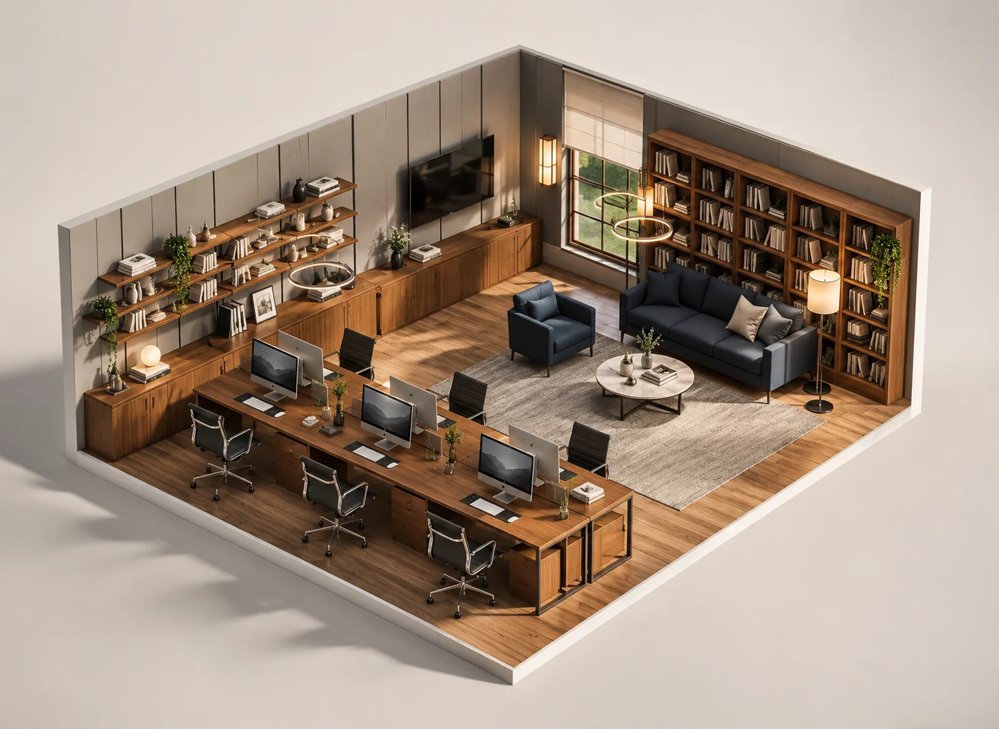
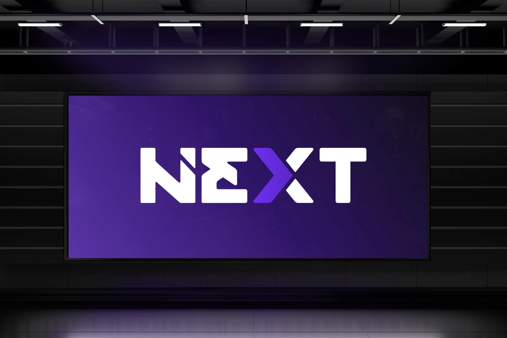

VITAE
Reorganização e redesign da área de escritório.

Este projeto foi desenvolvido para o Centro de Acolhimento VITAE, uma casa de acolhimento para crianças e jovens sem lar. O principal desafio foi redesenhar o espaço de trabalho da equipa, um local sem funcionalidade, conforto e organização. O meu objetivo foi transformar uma área limitada e fragmentada num ambiente acolhedor, que incentive a colaboração, a concentração e o bem-estar, refletindo o cuidado e a dedicação de quem lá trabalha.
Processo e abordagem de design
O projeto começou com uma análise aprofundada da forma como o espaço era usado: a disposição, a luz e a circulação. A configuração existente limitava o movimento e não apoiava o fluxo de trabalho da equipa. Com base nestas observações, desenvolvi uma nova composição espacial, com melhor organização, mobiliário moderno e tons mais quentes. A proposta juntou funcionalidade e estética, combinando iluminação suave, cores neutras e texturas naturais para criar equilíbrio e conforto.

Resultado e impacto
O design final transformou o espaço de trabalho num ambiente aberto, coerente e centrado nas pessoas. A nova disposição melhorou a eficiência e o ambiente, dando à equipa um local de trabalho mais produtivo e motivador. Para além da estética, este projeto mostra como o design pode contribuir de forma real para o bem social, criando espaços com tanto significado como o trabalho que neles se faz.
Mais projetos

Purpose
Identidade visual e app de treino em casa e no ginásio.
2026
NEXT
Criação de um branding completo.
2020
Porta 4a
Criação da identidade de marca e da comunicação visual.
2022
Palácio Nacional da Ajuda
Criação de um rebranding completo.
2025
NEXT Interfaces
Sistema de interfaces in-game para um servidor FiveM.
2025
NEXT Website
Website e loja online do servidor NEXT PVP.
2026Fala comigo
Tens um projeto em mente? Vamos conversar — estou disponível para trabalhar em Lisboa e em qualquer parte do mundo.